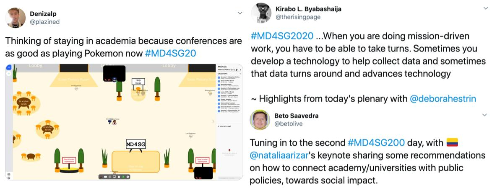

Author Awards
The winners of MD4SG'20 awards for exemplary work are:
Best Paper Award:
- Top Percent Policies and the Return to Postsecondary Selectivity, by Zachary Bleemer
- Competition under Social Interactions and the Design of Education Policies, by Claudia Allende
Best Paper with Student Presenter:
- All Things Equal? Social Networks as a Mechanism for Discrimination, by Chika Okafor
- Large-scale clinical trial of an AI-augmented intervention for HIV prevention in youth experiencing homelessness, by Bryan Wilder, Laura Onasch-Vera, Graham Diguiseppi, Robin Petering, Chyna Hill, Amulya Yadav, Eric Rice and Milind Tambe
New Horizons Award:
- Feminicide & Machine Learning: Detecting Gender-based Violence to Strengthen Civil Sector Activism, by Catherine D'Ignazio, Helena Suarez Val, Silvana Fumega, Harini Suresh, Isadora Cruxen, Wonyoung So, Maria De Los Angeles Martinez and Mariel Garcia-Montes
- Modeling Assumptions Clash with the Real World: Configuring Student Assignment Algorithms to Serve Community Needs, by Samantha Robertson, Tonya Nguyen and Niloufar Salehi
Most Popular Poster:
- Laboratorio de Derecho y Política Local, propone: Red de Monitoras y Monitores Derecho para Todos, by Lorayne Finol Romero, Cecilia González Jeria and Maximiliano Núñez Gómez
- Guaranteeing Maximin Shares: Some Agents Left Behind, by Hadi Hosseini, Andrew Searns and Sawyer Welden
- A Comparison of Living Standards Across the States of America, by Vegard Nygaard and Elena Falcettoni
Participant Awards
The Best Tweet Award is given to Denizalp, Kirabo L. Byabashaija, and Beto Saavedra, for their fun and engaging tweets!
